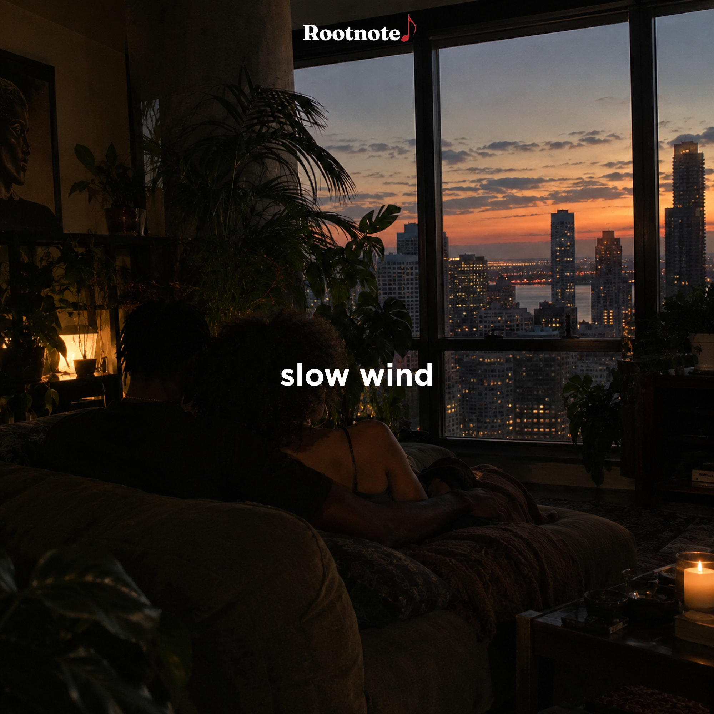

At Rootnote, we pride ourselves in going one layer deeper in everything we do, including and especially playlists. Our playlists expertly curated to evoke the exact niche emotion described. Each song has been specially selected to flow seamlessly into one another. Sit back and enjoy.

There's something special when two genres on opposite spectrums come together to evoke a single emotion. R&B & Afrobeats have always lived parallel to one another and their marriage creates some of the most euphoric settings imaginable. Often called Afro Soul, this playlist captures the beauty of calypso-driven drums with smooth downtempo chords. Grab some Malibu and your favorite boo and listen to Slow Wind by Rootnote.